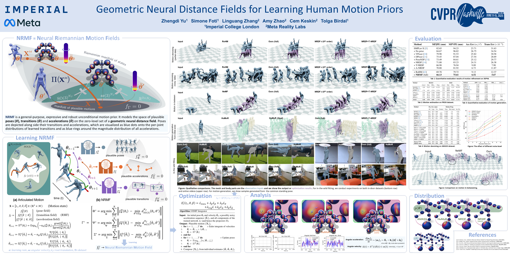
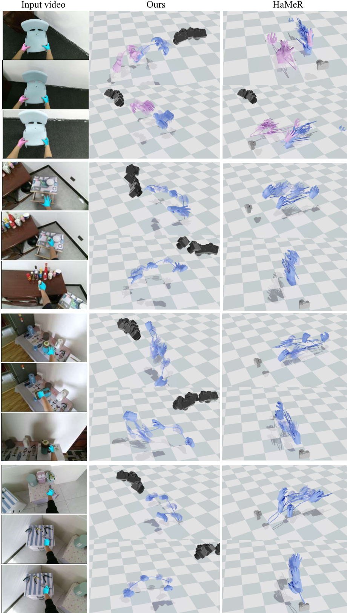
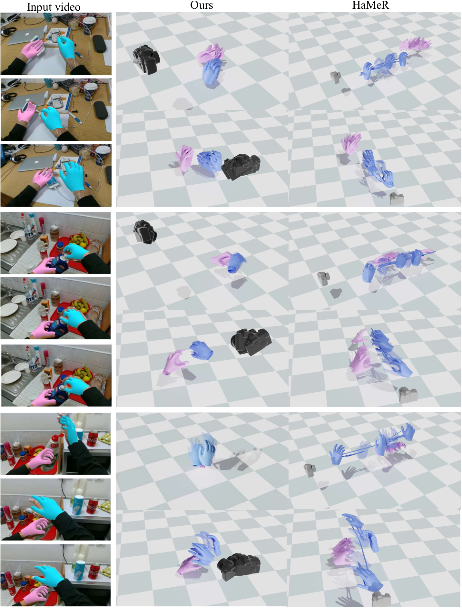
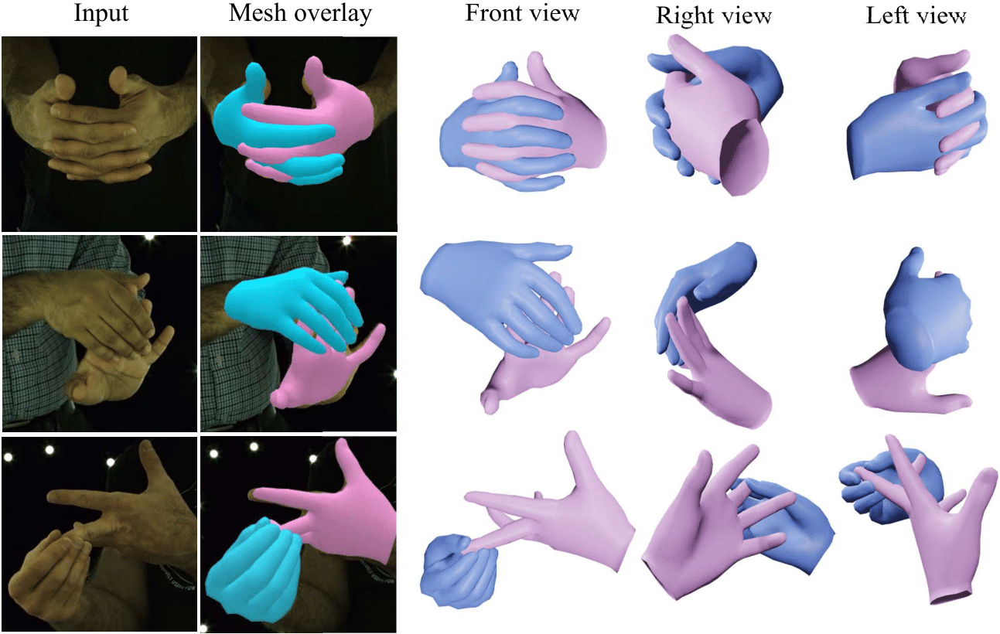
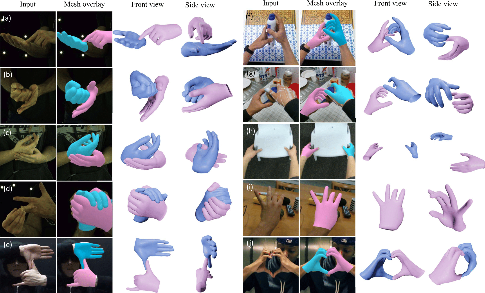
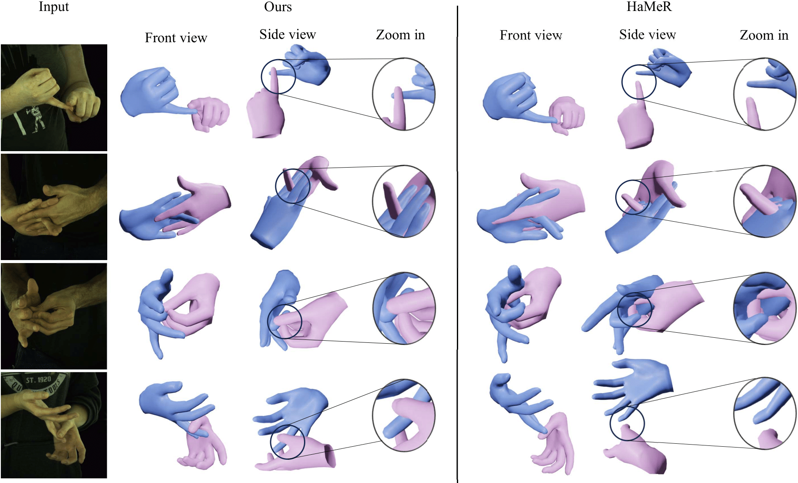

Gallery

In-the-wild 4D global hand motion reconstructions on HOI4D dataset.

In-the-wild 4D global hand motion reconstructions on FPHA dataset.

In-the-wild 4D global hand motion reconstructions on EgoDexter dataset.

Qualitative evaluation on InterHand2.6M dataset.

Qualitative results of hand pose estimation under complex hand interactions and hand-object interaction. In the figure, (a)-(b) are from InterHand2.6M, while (f)-(i) are from H2O, FPHA, HOI4D, and EgoDexter. Finally, (e) and (j) are from in-the-wild web videos.
